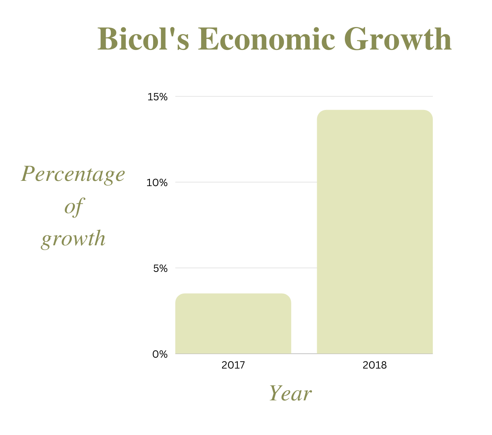

The Bicol region’s economy starts to recover from the adverse effect of the pandemic with 4.2 percent growth rate from a contraction of 8.3 percent in 2020 as reported by the Philippine Statistics Authority (PSA) during a simultaneous nationwide press conference on the country’s economic performance on April 28, 2022. NEDA 5 Regional Director Agnes E. Tolentino has said that “This sounds a lot of hope for Bicolanos that finally our economy is recovering”. In her statement on the region’s economic performance, Director Tolentino stated that despite the improvement, the growth is still below the annual target range of 6.7 percent to 7.7 percent growth as set under the Updated Bicol Regional Development Plan (RDP) 2017 to 2022.

The economic expansion of Bicol — composed of the provinces of Albay, Camarines Norte, Camarines Sur, Catanduanes, Masbate, and Sorsogon — was buoyed by the industry sector that grew 14.2% in 2018 from 3.5% in 2017. The sector accounted for 23.9% of its gross regional domestic product (GRDP).
The agricultural sector's slowing growth was a drag on the area's economic performance. The COVID 19 pandemic, African swine fever (ASF), typhoons Jolina and Odette, autumn armyworm infestation, and global increases in input costs all contributed to a further slowdown in the Agriculture, Forestry, and Fisheries sector. In order to boost the agriculture industry, director Tolentino underlined the need of gross value addition. "Without value addition, the government could not be primarily focused on producing agricultural products. Encouragement of farmers to start their own businesses is crucial for this reason. In order to optimize the production of agri-based goods and services, the area must continue to support its agricultural industry, she added.
Despite the setbacks, most of the industries grew significantly amidst the damages and service hiatus caused by the pandemic. The gradual reopening of the business, transport and tourism operation, and the continuous roll-out of vaccination programs not only for health workers but covering other eligible individuals are crucial in attaining economic recovery.
The region's priority in the next years will be a complete economic recovery. Government initiatives will keep supporting the rehabilitation program and assisting the Bicol area in recovering from the catastrophe. Through the OneDA Reform Agenda, the area will seek more proactive planning and execution to hasten the transformation of the AFF sector. It will be made easier to develop and complete expensive infrastructure projects in the area that will encourage the creation of jobs and intermodal connections both inside and beyond the region. An increase in tourists is anticipated in the region as a result of the addition of new flights and the opening of existing air and sea connections.
During the open discussion, director Tolentino discussed the value of stepping up the immunization program, improving the infrastructure that underpins the digital economy, and encouraging more private investments in digital services. In her concluding remarks, she expressed optimism by stating that the Bicol Region would recover to its pre-pandemic level by 2022 and would achieve the Philippine Plan and Bicol RDP goal of having a healthy and resilient Philippines in the absence of disasters and with the implementation of government programs.
Bicol Region has a lot of rich flat land, and agriculture is the most important part of the economy, employing nearly half of the people. The top five permanent crops in the region are coconuts, abaca, bananas, coffee, and jackfruit. Rice and maize are two of the region's main seasonal crops. Commercial fishing is also important with thirteen major fishing grounds supplying fish markets in places as far as Metro Manila. Agriculture and fishing are the major factors in the province's economy. Mining is another economic contributor to the region. Handicrafts, jewelry manufacturers, and other small-scale industries and manufacturing firms help to boost rural earnings.
Bicol Express - The most well-liked cuisine in the nation is this spicy Bicol dish. Came from the original Malate invention.
Pinangat - The "pinangat," another delectable meal, is likewise made with pork, chiles, coconut milk, and taro leaves.
Inulukan - This flavorful dish is a slightly modified variant of pinangat and a different kind of laing. Try it with your loved ones!
Pili Nut Candy - Look no further if you want some local dessert! Continually go to Legazpi City in Albay.
Tiwi Halo Halo - The DJC Halo-Halo in Tiwi, Albay, serves the most well-liked halo-halo in Bicol. Combination of sweet and salty.
Ligao’s Rice Puto - Let's visit the location of the finest rice puto. Their puto's two distinct filling varieties—macapuno and pandan—.
Longanisa De Guinobatan - Another decadent treat this time from the Albay town of Guinobatan. Dipped in vinegar, egg, etc.
Sili Ice Cream - The main components is "siling labuyo" and coconut milk, the regional dish of Bicol.